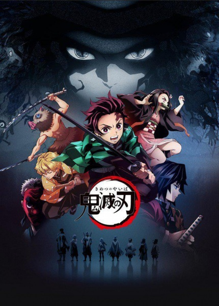

Аниме "клинок рассекающий демонов" одно из лучших аниме 20019 года

Аниме "клинок рассекающий демонов" завоевало сердца милионов фанатов аниме.С помощью своих персонажей,
рисовке,спецэффектов,сюжетной линии,проработки истории каждого персонажа включая как главных грероев так и второстепеных.
это всё и превело к анологичному эфекту популярности аниме.
сюжет аниме "клинок рассекающий демонов"
Действие манги разворачивается в японской глубинке в эру Тайсё. Однажды главный герой — юный торговец древесным углём Тандзиро Камадо — был вынужден остаться из-за непогоды в городе, в котором сбывал свой товар. Вернувшись домой, он обнаруживает, что его мать, младшие братья и сестра погибли в результате нападения демонов, в существование которых Тандзиро прежде не верил. Единственной выжившей после этого происшествия остаётся его ближайшая по возрасту сестра Нэдзуко, которая оказалась заражена демонической кровью и сама обратилась в демона, но сумела сохранить часть своего человеческого сознания. Не желая бросать в беде сестру, Тандзиро решает стать охотником на демонов, чтобы отыскать у этих существ средство сделать Нэдзуко вновь человеком
Автор аниме
Коёхару Готоге
В возрасте 24 лет, она приняла участие в 70-й церемонии вручения награды Jump Treasure Newcomer Manga Awards в 2013 с работой "Охотник на охотников (過か狩がり狩がり Kagarigari?).[1] Охотник на охотников - это 45 страничная манга про убийство демонов.
аниме оценивается 9.5\10 на сайте animego.org/p>
https://animego.org/